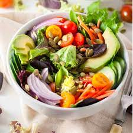

Simple Green Salad

Description
A simple green salad is a great complement to any meal.
This salad is versatile, and features a variety of colors, textures, and flavors to keep it interesting. Top it with your favorite dressing and serve with a bowl of hot soup or warm bread.
Credit: The Live In Kitchen
Ingredients
- 2 cups spring greens
- 1 cup sliced cucumber
- 1/2 cup julienned carrots
- 1 cup cherry tomatoes, halved
- 1/2 red onion, sliced
- 1 avacado, sliced
- 1/3 cup pepitas
- lemon juice
- olive oil
Directions
- In a large bowl, toss together salad mix, cucumber, carrot, tomatoes, and onion.
- Divide amongst two bowls, then top with pepitas and sliced avocado.
- Drizzle with lemon juice and olive oil to taste, or top with your favorite salad dressing.
Home